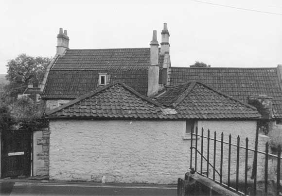

Type of building:
Attached house
Listing:
Not listed
Plan and elevation:
Double pile. Split level with two hipped roofs separated by a valley.
Summary of the probable main building
history:
Mid 18th Century farm building converted to a residence in the early 19th Century
and altered on several occasions since.

North elevation
Exterior:
The building is end on to the street and butts on to the rear walls of property
No. BE 016 and another building to the south, so is structurally of a later date
than these two other buildings. The north end wall of the property is rubble built
and quite thick (c. 63cm.). The east and west walls of the property are thin single
skin ashlar in rather large courses and appear to be butted to the rubble end
wall. The building in its present form has therefore been constructed by running
two walls (plus a third internal wall) from the rear walls of the two already
existing southern buildings, up to a boundary wall and placing the roof on to
them. The roof makes a very awkward and complicated junction with the wall one
and the roof (being lower) of the second southern properties. It is interesting
to note that the recess in the wall on the south side of the south-west bedroom
of the property has been contrived from an otherwise blocked window opening in
the rear wall of BE 016. The roof structure, where visible in the south-west corner,
is very simple and not part of any vernacular or professional design. Very small
scantling rough-sawn timber has been used to make a series of simple trusses.
This looks like late 19th to 20th Century do-it-yourself.
There are no stacks associated with the building in its current form, but there is one presently used by a stove downstairs, which, subject to further investigation, seems to have been added to the rear of one of the southern properties, and only in recent times available to the cottage. This rather implies that the building was not originally intended for habitation and may have been first built as an animal shelter or workshop/store.
Because of the steep slope from the rear of BE 016 and the other southern building to the boundary of the cottage on the road, the cottage is terraced up slope. There is a "first floor" entered from the upper level of the road and a "ground floor" actually at the level of the ground floors of BE 016 and the other southern property now reached by a modern stair and also external steps to a modern set of French windows. Despite modern additions at the junctions with the other properties to the south, the original structure is not otherwise much altered.
The building footprint appears on the Batheaston Tithe Map, 1840, and there is little doubt this structure is the one represented. The style of ashlar in the side walls is entirely in keeping with an early 19th Century date. The windows in the east wall first floor look very much like workshop windows of a slightly later date. The first floor south window on the west side is a sash that has been added externally rather than internally as is more usual with sashes on a thin wall. The sash itself has glazing bars that are moulded internally to give the impression of rounded corners to each glazing cell. This is likely to be stylistically early Victorian in date, suggesting a conversion to living accommodation around the middle of the 19th Century. The other window in this wall is more recent, probably 20th Century.
Interior:
There is evidence that the present building incorporates elements of an older
one. At the south end of the west wall ("ground floor"), a short length
of the wall is at a different alignment to the rest of the wall. From it a machine
cut beam projects and rests upon a stone pier opposite the stack on the back of
one of the southern buildings. From its seating on the central pier the beam appears
to be a replacement for an earlier beam. From here, another beam, not machine
cut and with marks suggesting re-use from elsewhere, carries on in a slightly
different alignment to the east wall. All details of an earlier wall at this point
have been removed by modern alterations or masked internally with plaster. These
odd lengths of wall and beam seem to outline a small open fronted structure built
against the back of the southern buildings but not parallel to them. It is thought
that this might be a cart shed and possible stable. Access from them to the road
would have to be to the west across what is now the kitchen and part of the back
access to property No. BE 016.
Date & development:
It is apparent from the interaction of the three properties, that they must have
been one originally. The likelihood is that one of the southern properties was
a farmhouse, c.1750, while the other (BE016) could well have been a barn or similar,
later converted into a dwelling (the brick gable end and inserted brick stacks
could have been added in the late 18th Century at earliest, but well within the
Georgian tradition). The cottage starts as a cartshed and is then extended into
a workshop or store, before becoming a dwelling house in the early 19th Century.
When the actual legal division of the properties occurred is for a documentary
study to reveal. A lease of 1710 is believed to exist for the cottage. This may
well turn out to be for the whole property and later bundled with this one. The
1840 Batheaston Tithe Apportionment Schedule indicates that the properties were
still in single ownership, by a certain Abraham Cottle, but physical separation
of the properties had taken place, being described as “houses and gardens”
in the occupation of “sundry” persons.
The house has been modernised on several occasions, with new floors at lower levels and fitted cupboards etc obscuring certain areas. Baluster rails etc are all modern. Internal doors and frames, however, at least on the upper level, appear to be consistent with a mid to late 19th Century date.
References:
- Batheaston Tithe Map and Apportionment Schedule, 1840. Somerset Record Office
Reference Pictures
| The
complex of BE 016 & BE 017 |
BE
017 East elevation abutting a separate property |
Survey Drawings
| Lower
Floor Plan |
Upper
Floor Plan |
Section |